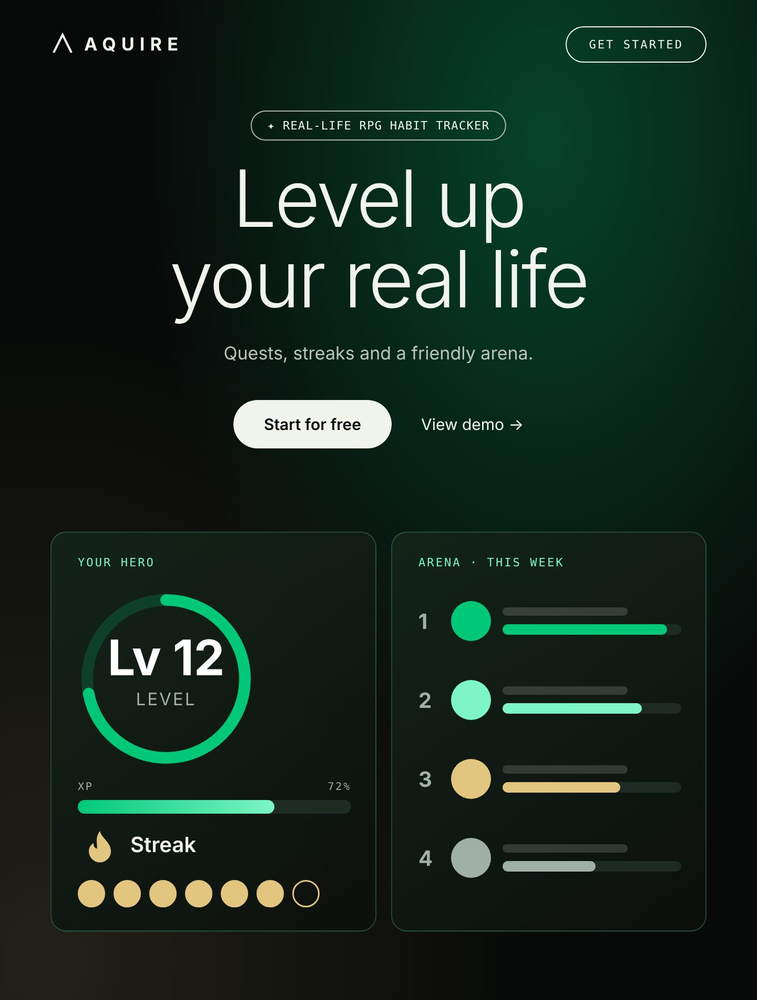
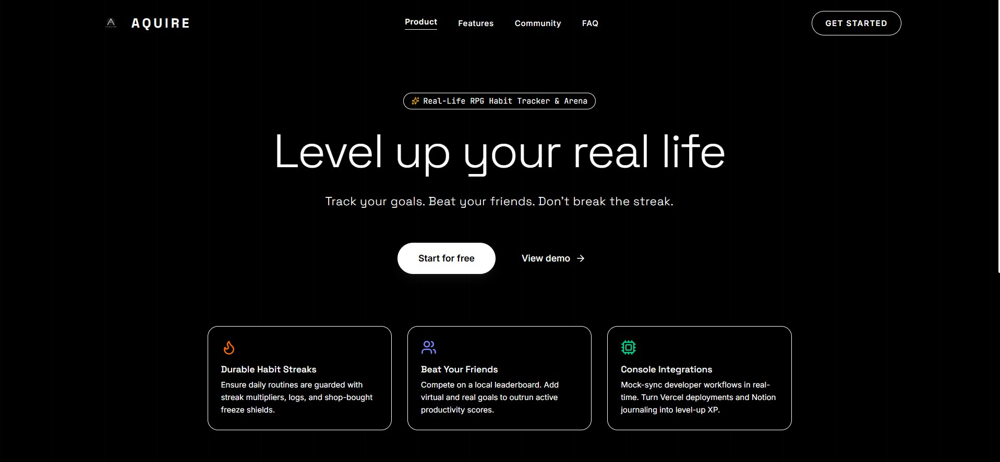
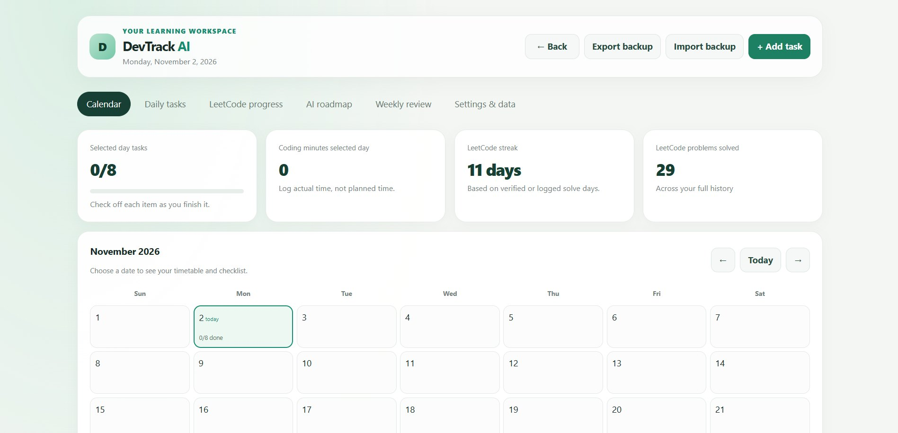
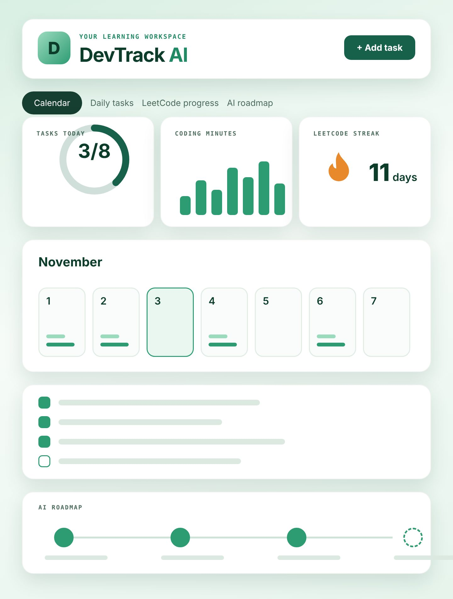
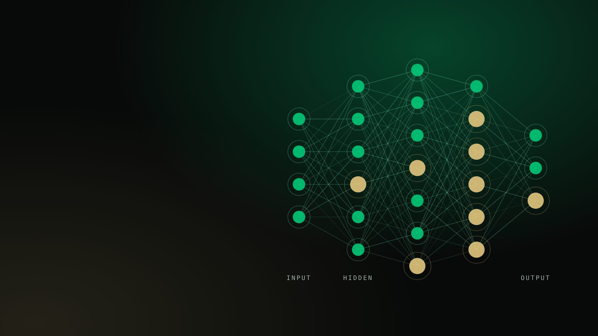
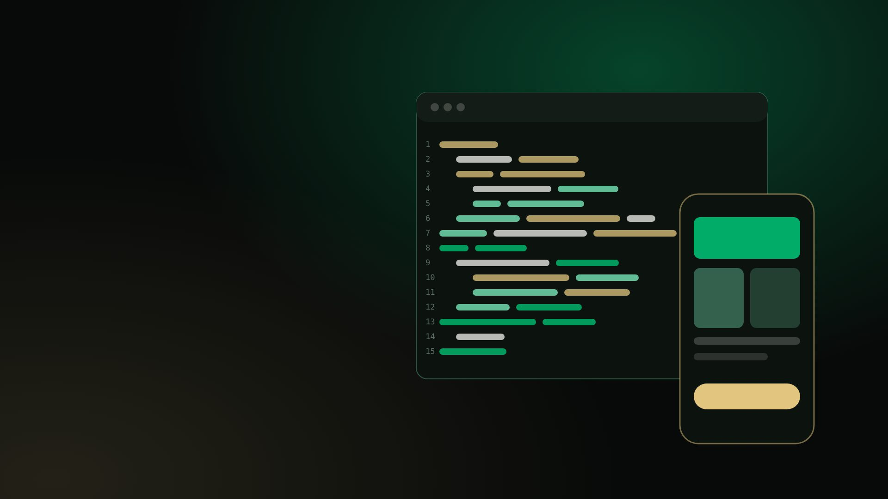
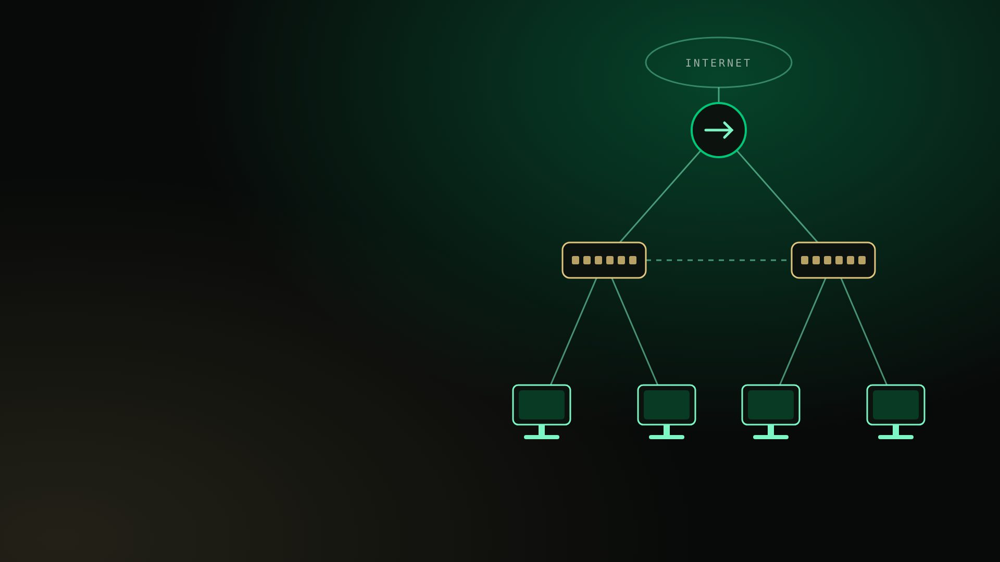
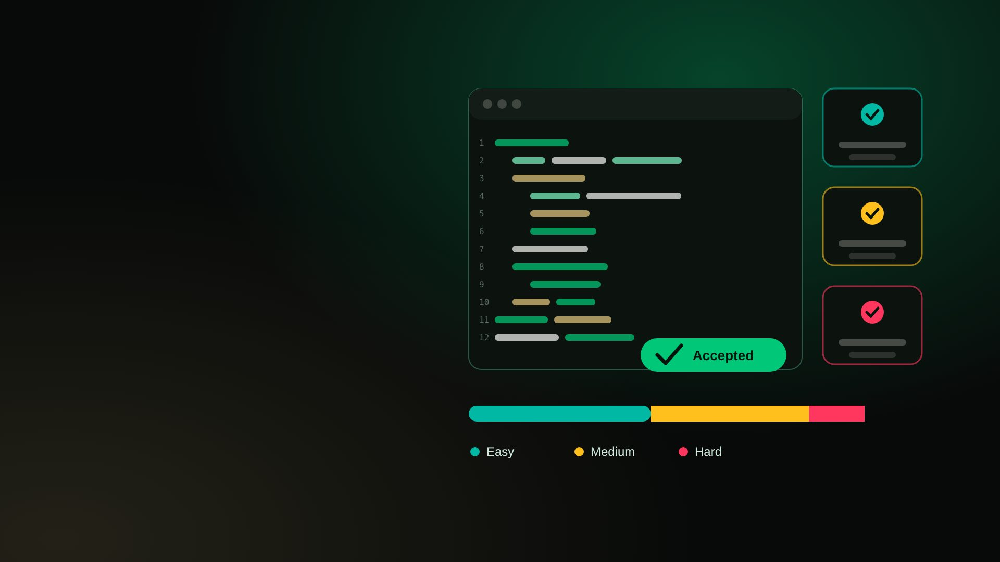
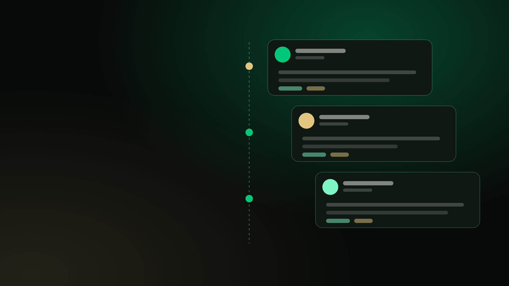

Aquire
An AI-focused productivity and collaboration platform, exploring how intelligent tools can make focused work easier.
AIProductivityCollaboration
B.TECH · AI & MACHINE LEARNING
I’m Aditya Bisht, a student exploring AI, software development, and practical ways to solve real problems.

Real-life RPG habit tracker: quests, streaks and an arena.

Learning workspace: calendar, daily tasks, LeetCode progress and AI roadmap.
SELECTED WORK
A few directions where technology, people, and useful ideas meet.

An AI-focused productivity and collaboration platform, exploring how intelligent tools can make focused work easier.

A LITTLE ABOUT ME
I’m a B.Tech student specializing in Artificial Intelligence & Machine Learning at Vivekananda Institute of Professional Studies – Technical Campus. I’m building my skills through hands-on projects, workshops, and continuous learning.
My current learning areas include Python, AI and machine learning, web development, and generative AI. I’m especially interested in turning new concepts into practical solutions.
View this portfolio on GitHub
Models, data and the layers between input and output.

Clean code that ships to browsers and phones.

How machines talk: routers, switches, hosts.
TECHNICAL ARSENAL
Core languages, machine learning stacks, and development toolkits applied across projects.
Practical modeling, deep learning concepts, and workflow intelligence.
Modern responsive web architecture, APIs, and scalable design.
Systems architecture, device protocols, and networking design.

Easy, medium and hard problems, solved steadily.

What I build and study, posted as I go.
LEARNING IN PUBLIC
Recent milestones and ongoing problem-solving practice.
OPEN TO LEARNING & COLLABORATION